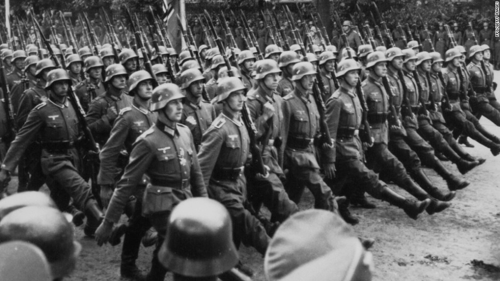
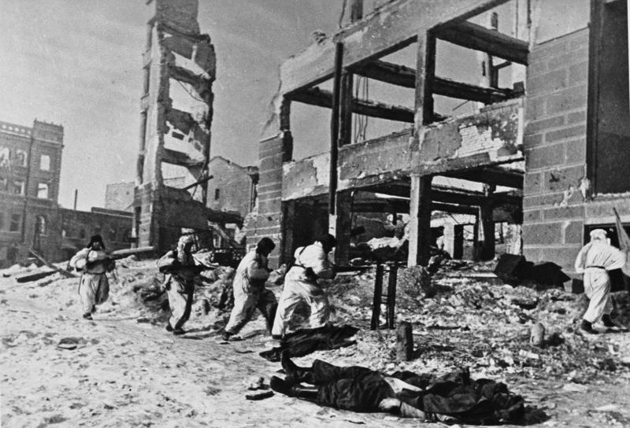
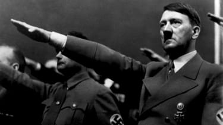

World War II or the Second World War, often abbreviated as WWII or WW2,
was a global war that lasted from 1939 to 1945. It involved the vast
majority of the world's countries—including all of the great
powers—forming two opposing military alliances: the Allies and the Axis
powers. In a total war directly involving more than 100 million
personnel from more than 30 countries, the major participants threw
their entire economic, industrial, and scientific capabilities behind
the war effort, blurring the distinction between civilian and military
resources. Aircraft played a major role in the conflict, enabling the
strategic bombing of population centres and the only two uses of nuclear
weapons in war. World War II was by far the deadliest conflict in human
history; it resulted in 70 to 85 million fatalities, a majority being
civilians. Tens of millions of people died due to genocides (including
the Holocaust), starvation, massacres, and disease. In the wake of the
Axis defeat, Germany and Japan were occupied, and war crimes tribunals
were conducted against German and Japanese leaders.

World War II is generally considered to have begun on 1 September 1939,
when Nazi Germany, under Adolf Hitler, invaded Poland. The United
Kingdom and France subsequently declared war on Germany on 3 September.
Under the Molotov–Ribbentrop Pact of August 1939, Germany and the Soviet
Union had partitioned Poland and marked out their "spheres of influence"
across Finland, Estonia, Latvia, Lithuania and Romania. From late 1939
to early 1941, in a series of campaigns and treaties, Germany conquered
or controlled much of continental Europe, and formed the Axis alliance
with Italy and Japan (along with other countries later on). Following
the onset of campaigns in North Africa and East Africa, and the fall of
France in mid-1940, the war continued primarily between the European
Axis powers and the British Empire, with war in the Balkans, the aerial
Battle of Britain, the Blitz of the UK, and the Battle of the Atlantic.
On 22 June 1941, Germany led the European Axis powers in an invasion of
the Soviet Union, opening the Eastern Front, the largest land theatre of
war in history.


Japan, which aimed to dominate Asia and the Pacific, was at war with the
Republic of China by 1937. In December 1941, Japan attacked American and
British territories with near-simultaneous offensives against Southeast
Asia and the Central Pacific, including an attack on the US fleet at
Pearl Harbor which resulted in the United States declaring war against
Japan. As such, the European Axis powers declared war on the United
States in solidarity. Japan soon captured much of the western Pacific,
but its advances were halted in 1942 after losing the critical Battle of
Midway; later, Germany and Italy were defeated in North Africa and at
Stalingrad in the Soviet Union. Key setbacks in 1943—including a series
of German defeats on the Eastern Front, the Allied invasions of Sicily
and the Italian mainland, and Allied offensives in the Pacific—cost the
Axis powers their initiative and forced it into strategic retreat on all
fronts. In 1944, the Western Allies invaded German-occupied France,
while the Soviet Union regained its territorial losses and turned
towards Germany and its allies. During 1944 and 1945, Japan suffered
reversals in mainland Asia, while the Allies crippled the Japanese Navy
and captured key western Pacific islands. The war in Europe concluded
with the liberation of German-occupied territories, and the invasion of
Germany by the Western Allies and the Soviet Union, culminating in the
fall of Berlin to Soviet troops, Hitler's suicide and the German
unconditional surrender on 8 May 1945. Following the Potsdam Declaration
by the Allies on 26 July 1945 and the refusal of Japan to surrender on
its terms, the United States dropped the first atomic bombs on the
Japanese cities of Hiroshima, on 6 August, and Nagasaki, on 9 August.
Faced with an imminent invasion of the Japanese archipelago, the
possibility of additional atomic bombings, and the Soviet entry into the
war against Japan and its invasion of Manchuria, Japan announced its
intention to surrender on 15 August, then signed the surrender document
on 2 September 1945, cementing total victory in Asia for the Allies.
World War II changed the political alignment and social structure of the
globe. The United Nations (UN) was established to foster international
co-operation and prevent future conflicts,[1] great powers—China,
France, the Soviet Union, the United Kingdom, and the United
States—became the permanent members of its Security Council. The Soviet
Union and the United States emerged as rival superpowers, setting the
stage for the nearly half-century-long Cold War. In the wake of European
devastation, the influence of its great powers waned, triggering the
decolonisation of Africa and Asia. Most countries whose industries had
been damaged moved towards economic recovery and expansion. Political
and economic integration, especially in Europe, began as an effort to
forestall future hostilities, end pre-war enmities and forge a sense of
common identity.
Adolf Hitler, after an unsuccessful attempt to overthrow the German
government in 1923, eventually became the Chancellor of Germany in 1933
when Paul Von Hindenburg and the Reichstag appointed him. He abolished
democracy, espousing a radical, racially motivated revision of the world
order, and soon began a massive rearmament campaign.[21] Meanwhile,
France, to secure its alliance, allowed Italy a free hand in Ethiopia,
which Italy desired as a colonial possession. The situation was
aggravated in early 1935 when the Territory of the Saar Basin was
legally reunited with Germany, and Hitler repudiated the Treaty of
Versailles, accelerated his rearmament programme, and introduced
conscription.[22] The United Kingdom, France and Italy formed the Stresa
Front in April 1935 in order to contain Germany, a key step towards
military globalisation; however, that June, the United Kingdom made an
independent naval agreement with Germany, easing prior restrictions. The
Soviet Union, concerned by Germany's goals of capturing vast areas of
Eastern Europe, drafted a treaty of mutual assistance with France.
Before taking effect, though, the Franco-Soviet pact was required to go
through the bureaucracy of the League of Nations, which rendered it
essentially toothless.[23] The United States, concerned with events in
Europe and Asia, passed the Neutrality Act in August of the same
year.[24] Hitler defied the Versailles and Locarno treaties by
remilitarising the Rhineland in March 1936, encountering little
opposition due to the policy of appeasement.[25] In October 1936,
Germany and Italy formed the Rome–Berlin Axis. A month later, Germany
and Japan signed the Anti-Comintern Pact, which Italy joined the
following year.[26]